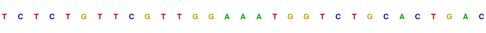
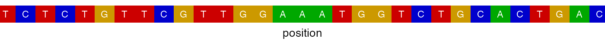
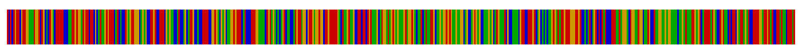
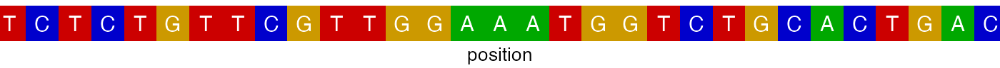
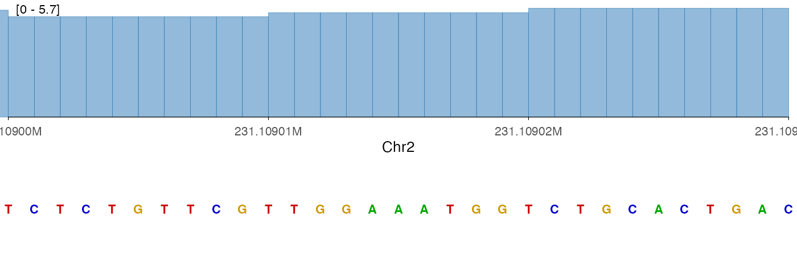
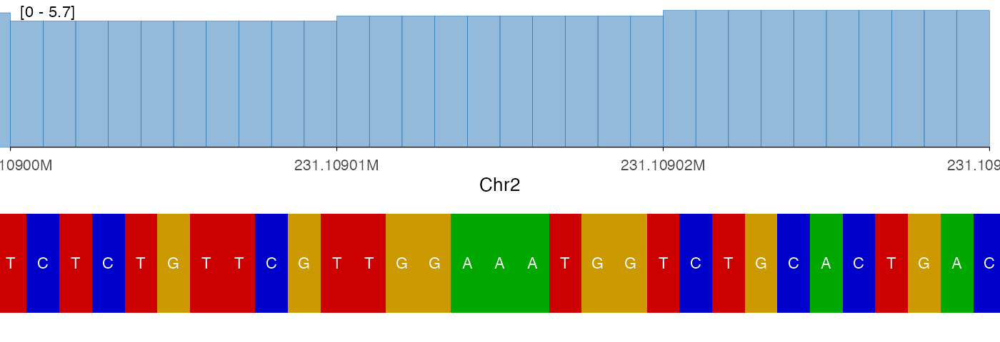
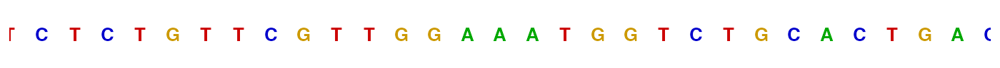

library(ezGenomeTracks)
#> Warning: replacing previous import 'AnnotationDbi::select' by 'dplyr::select'
#> when loading 'ezGenomeTracks'
#> ezGenomeTracks v0.0.14
#> Easy and flexible genomic track visualization
#> Use citation('ezGenomeTracks') to see how to cite this package
#> For documentation and examples, visit: https://github.com/zmu/ezGenomeTracks
library(ggplot2)ezGenomeTracks provides ez_sequence() to
plot nucleotide sequence from a reference genome. Each base is colored
following UCSC Genome Browser
conventions: A (green), C (blue),
G (gold), T (red), N
(grey).
Setup
You need a BSgenome data package for your organism. For human hg38:
BiocManager::install("BSgenome.Hsapiens.UCSC.hg38")
library(BSgenome.Hsapiens.UCSC.hg38)
#> Loading required package: GenomeInfoDb
#> Warning: package 'GenomeInfoDb' was built under R version 4.3.3
#> Loading required package: BiocGenerics
#>
#> Attaching package: 'BiocGenerics'
#> The following objects are masked from 'package:stats':
#>
#> IQR, mad, sd, var, xtabs
#> The following objects are masked from 'package:base':
#>
#> anyDuplicated, aperm, append, as.data.frame, basename, cbind,
#> colnames, dirname, do.call, duplicated, eval, evalq, Filter, Find,
#> get, grep, grepl, intersect, is.unsorted, lapply, Map, mapply,
#> match, mget, order, paste, pmax, pmax.int, pmin, pmin.int,
#> Position, rank, rbind, Reduce, rownames, sapply, setdiff, sort,
#> table, tapply, union, unique, unsplit, which.max, which.min
#> Loading required package: S4Vectors
#> Loading required package: stats4
#>
#> Attaching package: 'S4Vectors'
#> The following object is masked from 'package:utils':
#>
#> findMatches
#> The following objects are masked from 'package:base':
#>
#> expand.grid, I, unname
#> Loading required package: IRanges
#> Loading required package: BSgenome
#> Loading required package: GenomicRanges
#> Loading required package: Biostrings
#> Warning: package 'Biostrings' was built under R version 4.3.3
#> Loading required package: XVector
#>
#> Attaching package: 'Biostrings'
#> The following object is masked from 'package:base':
#>
#> strsplit
#> Loading required package: BiocIO
#> Loading required package: rtracklayer
#>
#> Attaching package: 'rtracklayer'
#> The following object is masked from 'package:BiocIO':
#>
#> FileForFormat
genome <- BSgenome.Hsapiens.UCSC.hg38::HsapiensDefine a short region to inspect (sequence tracks are most useful at base-pair resolution):
region <- "chr2:231109000-231109030"Visual styles
ez_sequence() offers two visual styles controlled by the
style argument.
Text style (default)
The default style = "text" draws bold, UCSC-colored
nucleotide letters with no background or border — a clean look that is
readable at narrow regions and blends well with other tracks.
ez_sequence(genome, region = region)
#> Warning in geom_sequence(style = style, show_labels = show_labels, label_size =
#> label_size, : Ignoring unknown parameters: `label_colour`
Tile style
style = "tile" draws colored background tiles with white
letter labels on top, echoing the classic UCSC “dense” sequence
display.
ez_sequence(genome, region = region, style = "tile")
#> Warning in geom_sequence(style = style, show_labels = show_labels, label_size =
#> label_size, : Ignoring unknown parameters: `label_colour`
Automatic label suppression
When the region is wider than max_label_bp (default 200
bp), show_labels = "auto" (the default) suppresses
individual letter labels automatically. This prevents overplotting while
still rendering colored blocks for orientation.
# Wide region: labels hidden automatically, tiles drawn instead
ez_sequence(genome, region = "chr2:231109000-231109500", style = "tile")
#> Warning in geom_sequence(style = style, show_labels = show_labels, label_size =
#> label_size, : Ignoring unknown parameters: `label_colour`
You can override this behaviour by setting show_labels
explicitly:
# Force labels off regardless of region width
ez_sequence(genome, region = region, show_labels = FALSE, style = "tile")
#> Warning in geom_sequence(style = style, show_labels = show_labels, label_size =
#> label_size, : Ignoring unknown parameters: `label_colour`Customizing colors
Use the colors argument to override individual
nucleotide colors. Only the specified bases are changed; others retain
UCSC defaults.
ez_sequence(
genome,
region = region,
colors = c(A = "darkorchid", T = "deeppink")
)
#> Warning in geom_sequence(style = style, show_labels = show_labels, label_size =
#> label_size, : Ignoring unknown parameters: `label_colour`Inspect the full default palette:
ez_sequence_palette()
#> A C G T N
#> "#00A800" "#0000CC" "#CC9900" "#CC0000" "#999999"Replace the entire palette by supplying all five bases:
grayscale <- c(
A = "#222222",
C = "#555555",
G = "#888888",
T = "#BBBBBB",
N = "#DDDDDD"
)
ez_sequence(genome, region = region, colors = grayscale)
#> Warning in geom_sequence(style = style, show_labels = show_labels, label_size =
#> label_size, : Ignoring unknown parameters: `label_colour`Adjusting label size and tile height
ez_sequence(
genome,
region = region,
style = "tile",
label_size = 4,
tile_height = 1
)
#> Warning in geom_sequence(style = style, show_labels = show_labels, label_size =
#> label_size, : Ignoring unknown parameters: `label_colour`
Stacking with other tracks
ez_sequence() returns a standard ggplot2 object and is
fully compatible with vstack_plot(). A common pattern is to
place a sequence track at the bottom of a stacked plot for base-level
context.
bw0 <- system.file(
"extdata",
"avg_chr2-231091223_231109786_231113600_0.bw",
package = "ezGenomeTracks"
)
cov_track <- ez_coverage(bw0, region = region, y_axis_style = "simple")
seq_track <- ez_sequence(genome, region = region)
#> Warning in geom_sequence(style = style, show_labels = show_labels, label_size =
#> label_size, : Ignoring unknown parameters: `label_colour`
vstack_plot(cov_track, seq_track, heights = c(1))
The tile style can also be useful in a stacked context, particularly when the region is very narrow:
vstack_plot(
ez_coverage(bw0, region = region, y_axis_style = "simple"),
ez_sequence(genome, region = region, style = "tile"),
heights = c(1)
)
#> Warning in geom_sequence(style = style, show_labels = show_labels, label_size =
#> label_size, : Ignoring unknown parameters: `label_colour`
Low-level usage with geom_sequence
For full control, you can use geom_sequence() directly
in a ggplot() call. The expected data frame needs
position, nucleotide, and fill
columns, which you can build with ez_sequence_palette() and
a DNAString:
library(BSgenome)
library(GenomicRanges)
region_gr <- parse_region(region)
seq_char <- as.character(getSeq(genome, region_gr)[[1]])
nucs <- strsplit(seq_char, "")[[1]]
palette <- ez_sequence_palette()
seq_df <- data.frame(
position = seq(
GenomicRanges::start(region_gr),
by = 1L,
length.out = length(nucs)
),
nucleotide = nucs,
fill = palette[nucs]
)
head(seq_df)
#> position nucleotide fill
#> 1 231109000 T #CC0000
#> 2 231109001 C #0000CC
#> 3 231109002 T #CC0000
#> 4 231109003 C #0000CC
#> 5 231109004 T #CC0000
#> 6 231109005 G #CC9900
ggplot(seq_df, aes(x = position, label = nucleotide, fill = fill)) +
geom_sequence(label_size = 3.5) +
scale_fill_identity() +
scale_x_genome_region(region) +
ylim(0, 1) +
ez_sequence_theme()
#> Warning in geom_sequence(label_size = 3.5): Ignoring unknown parameters:
#> `label_colour`